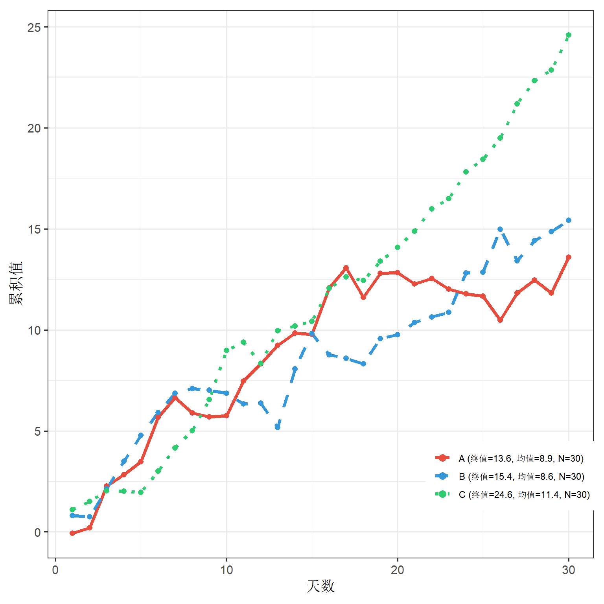

Chapter 3 R基础绘图系列-线图
本章介绍R基础绘图系列-线图
3.1 多线趋势图
library(tidyverse)
library(ggplot2)
# 创建示例数据：模拟时间序列数据
set.seed(123)
df <- data.frame(
day = 1:30,
A = cumsum(rnorm(30, 0.5, 1)),
B = cumsum(rnorm(30, 0.3, 1.2)),
C = cumsum(rnorm(30, 0.8, 0.8))
) %>%
pivot_longer(cols = c(A, B, C), names_to = "group", values_to = "value")
# 计算每个组的统计信息
stats_df <- df %>%
group_by(group) %>%
summarise(
final_value = last(value),
mean_value = mean(value),
N = n()
) %>%
mutate(
legend_label = sprintf("%s (终值=%.1f, 均值=%.1f, N=%d)", group, final_value, mean_value, N)
)
legend_labels_map <- setNames(stats_df$legend_label, stats_df$group)
# 绑定数据用于颜色映射
df$legend_group <- legend_labels_map[df$group]
ggplot(df, aes(x = day, y = value, color = legend_group, linetype = legend_group)) +
# 绘制主线
geom_line(size = 1.5) +
# 添加数据点
geom_point(size = 2, shape = 16) +
# 颜色和线型设置
scale_color_manual(
values = c("#e74c3c", "#3498db", "#2ecc71"),
labels = legend_labels_map
) +
scale_linetype_manual(
values = c("solid", "dashed", "dotted"),
labels = legend_labels_map
) +
theme_bw(base_size = 14) +
theme(
legend.position = c(0.85, 0.15),
legend.title = element_blank(),
legend.text = element_text(size = 9),
plot.margin = margin(10, 10, 10, 10)
) +
labs(
x = "天数",
y = "累积值"
) +
guides(
color = guide_legend(override.aes = list(size = 3)),
linetype = guide_legend(override.aes = list(size = 3))
)
Figure 3.1: 多线趋势图示例